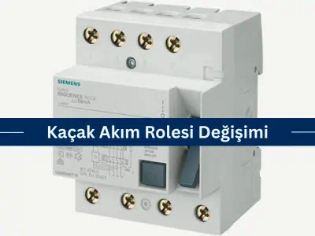
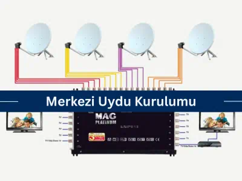
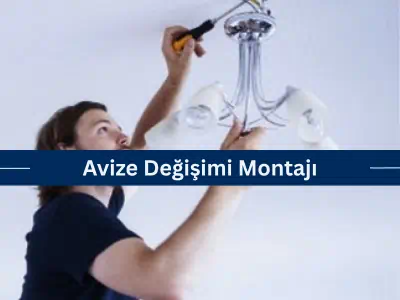
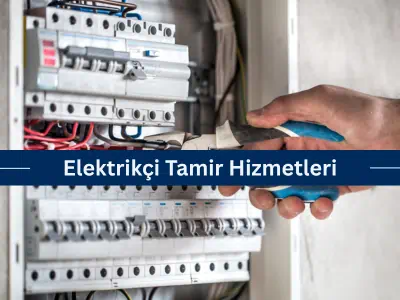
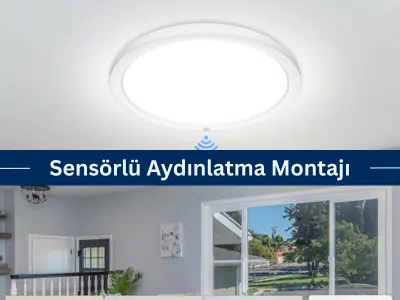
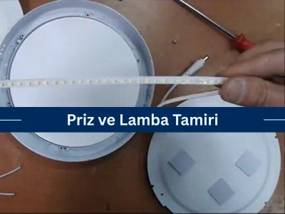
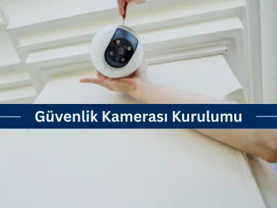
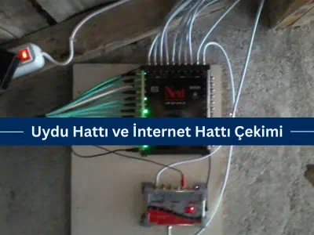
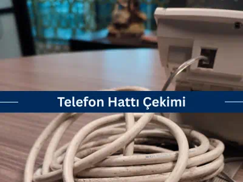
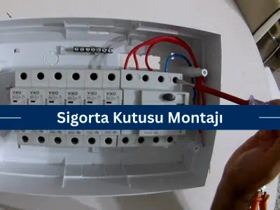

Akıllı ev sistemleri; aydınlatma, ısıtma-soğutma, güvenlik ve enerji tüketimini tek merkezden yöneterek
yaşam alanlarını
daha konforlu, güvenli ve verimli hâle getirir.
Sensörler ve otomasyon senaryoları sayesinde elektrik
tasarrufu
sağlanırken, mobil uygulamalar ve sesli asistan entegrasyonları da evinizi dilediğiniz yerden kontrol
etmenize olanak
tanır.

Kaçak Akım Rolesi Değişimi
Kaçak akım rölesi, tesisattaki sızıntı akımlarını algılayarak çarpılma ve yangın tehlikesini önler.
Sürekli
atan ya
da bozulmuş rölelerin uzman elektrikçilerce test edilip gerekiyorsa yenilenmesi hayati önem taşır.
Yeni priz hattı döşenirken faz, nötr ve toprak iletkenleri doğru kesit ve bağlantılarla kurulmalıdır.
Ehil
işçilik
güvenli ve uzun ömürlü bir tesisat sağlar.

Merkezi Uydu Kurulumu
Merkezi uydu sistemi, tek bir antenle tüm dairelere yüksek netlikte yayın sunar; profesyonel kurulum zengin
kanal
seçeneği ve düzenli kablolama getirir.

Avize Değişim Montajı
Avize montajı hem estetik hem de güvenlik açısından titizlik ister; ekibimiz eski armatürü söküp yenisini
sağlam ve
dengeli şekilde takar.

Elektrikçi Elektrik Tamir Hizmetleri
Deneyimli ekibimiz priz, pano, kablo ve aydınlatma arızalarını hızla teşhis eder, güvenli onarımla sistemi
yeniden
devreye alır.
Eskiyen sigortaların yenilenmesi, hattınızı aşırı akım ve kısa devreye karşı yeniden koruma altına alır;
doğru
amper değeriyle riskler azaltılır.

Sensörlü Aydınlatma Montajı
Hareket veya günışığı sensörlü armatürler enerji tasarrufu ve ek güvenlik sağlar; profesyonel montajımızla
uzun
yıllar sorunsuz çalışır.

Priz ve Lamba Tamiri
Bozuk priz ve lambalar hem tehlike oluşturur hem konforu azaltır; uzmanlarımız arızayı hızla ve güvenle
giderir.
LED spotlar, mekânınıza çağdaş görünüm ve düşük enerji tüketimli aydınlatma kazandırır; doğru yerleşimle
homojen
ışık sağlar.
Dış alanlar için tasarlanan çevre aydınlatmalarımız, tasarruflu teknolojiyle uzun ömürlü ışık ve artırılmış
güvenlik sunar.

Güvenlik Kamerası Kurulumu
Ayrıntılı saha analizi yaparak en verimli kamera konumlarını belirliyor, 7/24 izlenebilir güvenlik
altyapısı
kuruyoruz.

Uydu Hattı ve Internet Hattı Çekimi
Kesintisiz TV ve internet bağlantısı için kablolama, uç sonlandırma ve kapsamlı testleri eksiksiz
gerçekleştiriyoruz.
Şerit LED uygulamalarında doğru kesim ve bağlantıyla mekânınıza tasarruflu, kesintisiz ışık ve şık bir hat
kazandırıyoruz.
Kablolama, modem ve altyapı kontrolleriyle bağlantı sorunlarını hızla tespit ediyor ve gideriyoruz.

Telefon Hattı Çekimi
Sorunsuz iletişim için telefon hattınızı kaliteli kablolar ve profesyonel işçilikle döşüyoruz.
Yönetmeliklere uygun yeni tesisat kurarak enerji verimliliği ve güvenliği artırıyor, periyodik bakımını
üstleniyoruz.

Sigorta Kutusu Montajı
Doğru seçilen sigortalarla monte edilen kutu, tesisatınızı korur ve olası riskleri minimuma indirir.
Bahçe aydınlatması, dış alanınıza estetik dokunuş ve güvenlik katar; LED ve sensörlü sistemlerimizle uzun
ömürlü
ışık sağlarız.